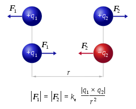
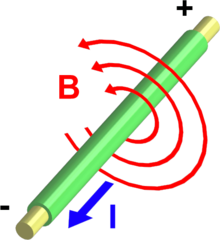

EZPhysic
Física para todos

Leyes de la Física Eléctrica

Ohm completó la ley introduciendo la noción de resistencia eléctrica R; que es el factor de proporcionalidad que aparece en la relación entre V e I.

El campo magnético es un campo angular con forma circular, cuyas líneas de campo son círculos concéntricos. La dirección del campo en un punto es tangencial a dichos círculos en un plano que resulta perpendicular al paso de la corriente.
El campo magnético disminuye inversamente con la distancia al conductor. 
Físicos Eléctricos
Carl Friedrich Gauss
En 1831, Gauss desarrolló una fructífera colaboración con el profesor de física Wilhelm Weber , que condujo a nuevos conocimientos sobre magnetismo (incluida la búsqueda de una representación de la unidad de magnetismo en términos de masa, carga y tiempo) y al descubrimiento de las leyes de circuito de Kirchhoff en electricidad.27 Fue durante este tiempo que formuló la ley de su homónimo . Construyeron el primer telégrafo electromecánico en 1833,27 que conectaba el observatorio con el instituto de física de Gotinga.
Charles-Augustin de Coulomb
En la segunda mitad del siglo XVIII, científicos como los británicos Joseph Priestley o Henry Cavendish comenzaron a observar experimentalmente que la fuerza de atracción o repulsión entre dos cargas dependía de la magnitud de estas y era inversamente proporcional a la distancia entre ellas, como la fuerza gravitatoria descrita por Isaac Newton. Fue el francés Charles-Augustin de Coulomb (14 de junio de 1736 – 23 de agosto de 1806) quien en 1785 formuló la ley que lleva su nombre. En 1908 se designó en su honor la unidad de carga, el culombio.
André-Marie Ampère
Si el impulso de Coulomb fue decisivo para la formulación de la electrostática, fue su compatriota André-Marie Ampère quien sentó los fundamentos de la electrodinámica. Basándose en los trabajos previos del danés Hans Christian Ørsted, en la década de 1820 Ampère comenzó a dar forma física y matemática a la fuerza de atracción o repulsión entre dos cables paralelos conductores de corriente eléctrica. La ley de Ampère abrió el camino hacia la comprensión y la definición matemática del electromagnetismo, lo que en 1881 fue reconocido asignando el nombre de amperio a la unidad de corriente eléctrica.
Georg Ohm
Mientras Ampère investigaba la fuerza en acción entre dos cables eléctricos, el alemán Georg Ohm (16 de marzo de 1789 – 6 de julio de 1854) empleaba las baterías de Volta y artefactos de diseño propio para estudiar cómo la corriente (I) variaba en función del voltaje aplicado (V) y la resistencia del circuito (R). Este asunto ya había interesado a científicos como Cavendish, que empleaba su cuerpo para cerrar el circuito y experimentar en propia carne la fuerza del choque eléctrico en cada caso. La ley que resume los resultados de Ohm, I = V/R, puede parecer hoy casi obvia, y sin embargo la publicación de su formulación original en 1827 suscitó más recelo que aplauso. Posteriormente la contribución de Ohm se plasmaría en el nombre de la unidad de resistencia eléctrica, el ohmio.